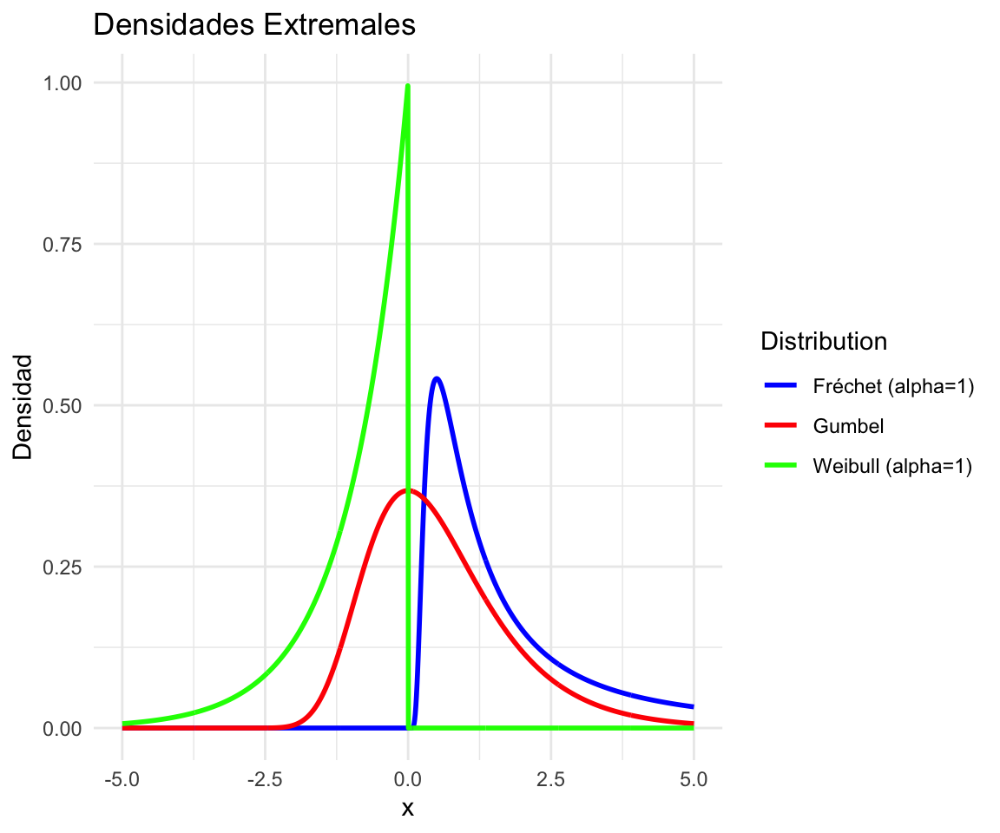

Datos Extremales (2025)
2025-01-19
Capítulo 1 La teoría asintótica clásica, las distribuciones extremales y sus dominios de atracción.
Se dice que tenemos datos extremos cuando cada dato corresponde al máximo o mínimo de varios registros. Ejemplos de este tipo de datos son:
- La máxima altura semanal de la ola en una plataforma marina o portuaria \((m)\).
- La máxima velocidad de viento en determinada dirección a lo largo de un mes \((km/h)\).
- La temperatura ambiental mínima a lo largo de un día \((\dot{C})\).
- La temperatura ambiental mínima a lo largo de un día (\(\dot{C}\))
- La máxima velocidad de tráfico en un enlace de una red de datos de datos en una hora (\(Mb/s\)).
- El mayor registro en un conteo de Coliformes fecales sobre agua costeras al cabo de quince días.
Son un caso particular de evento raro o gran desviación respecto a la media. En resumen, en una gran variedad de dominios disciplinares suele ser de gran interés el trabajo con datos extremos, los que admiten diversos enfoques. Entre ellos, los propios al párrafo anterior (eventos raros, grandes desviaciones), que se verán en el curso. Sin embargo, el comienzo del curso se centra en la teoría más clásica de estadística de datos extremos, basada en el trabajo de Fréchet, Gumbel, Weibull, Fisher, Tippett, Gnedenko, entre otros.
Observación 1: Se recuerda que si \(X\) e \(Y\) son variables aleatorias independientes, cuyas distribuciones son, respectivamente, \(F\) y \(G\), entonces la variable
\[\begin{equation} \max \left( X,Y \right)\hspace{10cm}(1) \label{eq:1} \end{equation}\]
tiene por distribución la función \(H\) definida por
\[\begin{equation} H(t)= F(t)\; G(t)\hspace{8.9cm}(2) \label{eq:2} \end{equation}\]
Observación 2: En esta parte inicial del curso asumiremos que nuestros datos son \(iid\) (independientes e idénticamente distribuidos, son dos suposiciones juntas). Esta doble suposición suele NO ser realista en aplicaciones concretas (ninguna de sus dos componentes, incluso) pero para comenzar a entender la teoría clásica, la utilizaremos por un tiempo.
Observación 3: Resulta claramente de la Observación 1, que si tenemos datos \(X_1,...,X_n\) \(iid\) con distribución \(F\), entonces
\[\begin{equation} X_n^{\ast}= \max \left( X_1,...,X_n \right)\hspace{7cm}(3) \end{equation}\]
tiene distribución \(F_n^\ast\) dada por
\[\begin{equation} F_n^\ast (t) = F(t)^n\hspace{9cm}(4) \end{equation}\]
Si conocemos la distribución \(F\) conoceríamos la distribución \(F_n^\ast\), pero en algunos casos la lectura que queda registrada es la del dato máximo y no la de cada observación que dio lugar al mismo, por lo que a veces ni siquiera es viable estimar \(F\). Pero aún en los casos en que \(F\) es conocida o estimable, si \(n\) es grande, la fórmula de \(F_n^\ast\) puede resultar prácticamente inmanejable. En una línea de trabajo similar a la que aporta el Teorema Central del Límite en la estadística de valores medios, un teorema nos va a permitir aproximar \(F_n^\ast\) por distribuciones más sencillas. Este es el Teorema de Fischer-Tippet-Gnedenko (FTG) que presentaremos en breve.
Observación 4: Si \(X_1,...,X_n\;\) es \(iid\;\) y definimos \(\;Y_i = -X_i\;\) para todo valor de \(i\), entonces \(Y_1,...,Y_n\;\) es \(iid\;\) y además
\[\begin{equation} min(X_1,...,X_n) = - max(Y_1,...,Y_n)\hspace{4.8cm}(5) \end{equation}\]
la teoría asintótica de los mínimos de datos \(iid\) se reduce a la de los máximos, razón por la que nos concentramos aquí en estudiar el comportamiento asintótico de los máximos exclusivamente.
Definición 1: Las distribuciones extremales.
Las distribuciones extremales son tres: la distribución de Gumbel, la distribución de Weibull y la distribución de Fréchet. En su versión standard o típica se definen del modo siguiente.
Se dice que una variable tiene distribución de:
-Gumbel si su distribución es
\[\Lambda(x) = e^{\{-e^{-x}\}}\hspace{0.3cm}\text{ para todo }\: x \;\text{real}.\hspace{4.2cm} (6)\]
-Weibull de orden \(\alpha>0\) si su distribución es
\[\Psi_{\alpha}(x)=\begin{cases} e^{\left\{-(-x)^{\alpha} \right\}} & si\;x<0\\ 1 & \text{en otro caso} \end{cases} \hspace{3.9cm} (7)\]
-Fréchet de orden \(\alpha>0\) si su distribución es
\[ \Phi_{\alpha}(x)=\begin{cases} e^{\left\{ -x^{-\alpha}\right\}} & si\;x>0\\ 0 & \text{en otro caso} \end{cases} \hspace{4.2cm} (8) \] Nota: Como los máximos en general son valores grandes, importa particularmente observar el comportamiento de estas distribuciones para \(x\) tendiendo a infinito. El límite es \(1\) como en toda distribución. Pero VA MAS RAPIDO a 1 la Weibull, luego la Gumbel y luego la Fréchet. Esto es indicio que la Fréchet modela datos más extremos, máximos de datos de colas más pesadas que la Gumbel y ésta que la Weibull. Más adelante veremos esto más precisamente. En la Fréchet, la velocidad de convergencia a 1 crece al aumentar el orden. En cambio en la Weibull el orden afecta la velocidad con que va a 0 cuando \(x\) tiende a menos infinito, que crece cuanto mayor el orden. Esto quedará más claro con el Teorema 1 del curso. La visualización de las densidades de cada tipo quizás ayude a comprender mejor los pesos relativos de las colas.

A estas versiones standard se las puede extender agregando un parámetro de recentramiento \((\mu)\) y un parámetro de escala \((\beta)\).
Se dice que \(X\) tiene distribución:
\(\Lambda^{(\mu, \beta)}\) si \(\;X=\mu + \beta Y\;\), donde \(Y\) tiene distribución \(\Lambda\).
\(\;\Psi^{(\mu, \beta)}\;\) si \(\;X=\mu + \beta Y\;\), donde \(Y\) tiene distribución \(\Psi_{\alpha}\).
\(\;\Phi^{(\mu, \beta)}\;\) si \(X=\mu + \beta Y\), donde \(Y\) tiene distribución \(\Phi_{\alpha}\).
En general, es en este sentido que diremos que una variable es Gumbel, Weibull o Fréchet (incluyendo recentramiento y reescalamiento), pero en cálculos donde los parámetros \(\mu\) y \(\beta\) no sean relevantes, por simplicidad, usaremos las versiones standard.
El siguiente teorema vincula las distribuciones extremales en sus formatos standard y resulta de gran utilidad práctica sobre todo al hacer tests de ajustes, etc.
Teorema 1 : Relaciones entre las versiones standard de las distribuciones extremales.